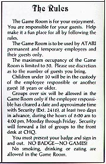
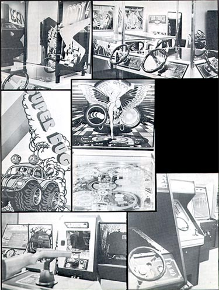
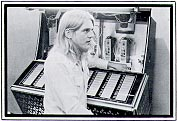
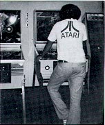
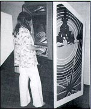

Behind
the ominous black and white sing that warns against smoking, eating and
drinking, is a world that is anything but ominous. From behind that
sign-bearing door, strange sound are to be heard. Whiz!, Bang!, Ka-Pow!
Screeching brankes. Crashing cars. Other worldly bleeps.
Rat-a-tat-tats. Pinball bumps and bells. Rock 'n Roll.
Not to mention the sound of voices. Person-against-machine sounds.
People gritting their teeth, planting their feet firmly on the floor, hands
in position, determined to conquer those machines that they themselves
created.
What is this place of sounds? It's the Atari Game Room, located in the CHQ building, 1265 Borregas. It's an incredible place, filled with eye-feasting sights. Mirrored walls panel each end of the long room, reflecting the breathtaking bright colors that overflow the room no matter where you look.
The place
has an awe-inspiring museum-like quality about it when no one's around.
It's eerily still. Strangely hushed. Lights flash in
tantalizing silence. Beckoning anyone to a head-to-head match
of human-against-inhuman wits. The machines wait. Patiently.

The Game Room assaults the senses with a powerful micture of sights and sounds. Magnificent colors and bold, clean, vivid graphics great the eye with a machine gun blast.
Everywhere
the eye wanders, there is something new waiting to be viewed. And
some machine waiting to be conquered. The jukebox waits too.
Its buttons throbbing to be touched, to set free its music.
All this excitment pulsates under
the watchful eye and expert care of Steve Upton. He knows the
machines. How to play them. How to win. In fact,
he knows them inside and out. He can dismantle a machine at
pinball speed, find the problem, and put it all back together just as quickly.
Good as new. Technically speaking. Steve's real
job at Atari is a Development Tech. The Game Room is just part
of his daily routine. He devotes probably 10-20 hours a week
here, making sure everything is as it should be so Atarians can find total
enjoyment here.
Steve watches people come and go. Defeated and elated. He knows who's refined the skills necessary to have an equal contest with the Game Room machines. Steve speaks of the "dual purpose" of the Game Room. First, it serves as a marketing tool. To display these magic machines. Vendors, distributors and sales reps stream in and out, persuing the Atari genius. But the most visible purpose is that extra benefit for everybody employed by Atari. A place to come during lunch, or on breaks. A place to left the spirits, sharpen the eye and the coordination, and pit yourself against there incredible space age toys.
Steve's watched the games-- and the popularity of each--come and go. He reesl off some of the current favorites: coin-op's Sprint 4, Tank 8 and the newest--Breakout. He lists Middle Earth as the most popular pinball machine. Starship used to dominate the scene here; Steve notes that each new game enjoys popularity for 4 or 5 months, then some new creation takes over. Come, indulge yourself in its pleasures.
Game Room Hours:
Mon-Sat, 8am to 10pm
Sunday 9am to 4:30pm